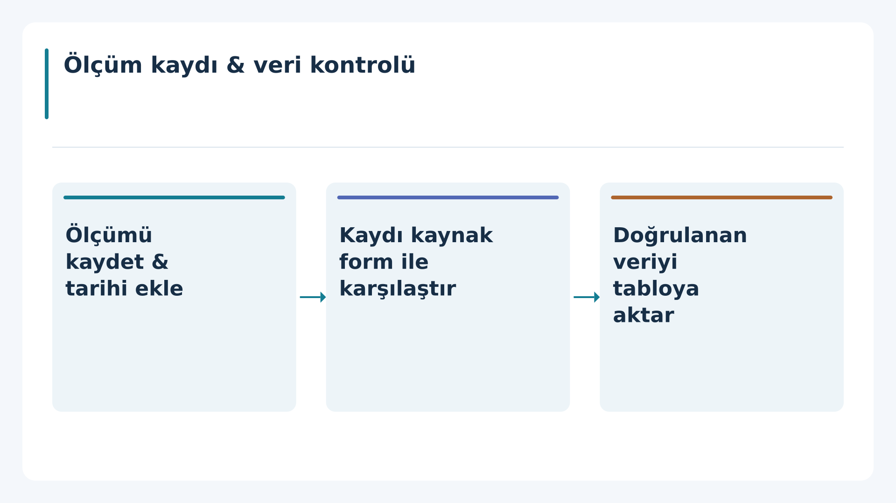
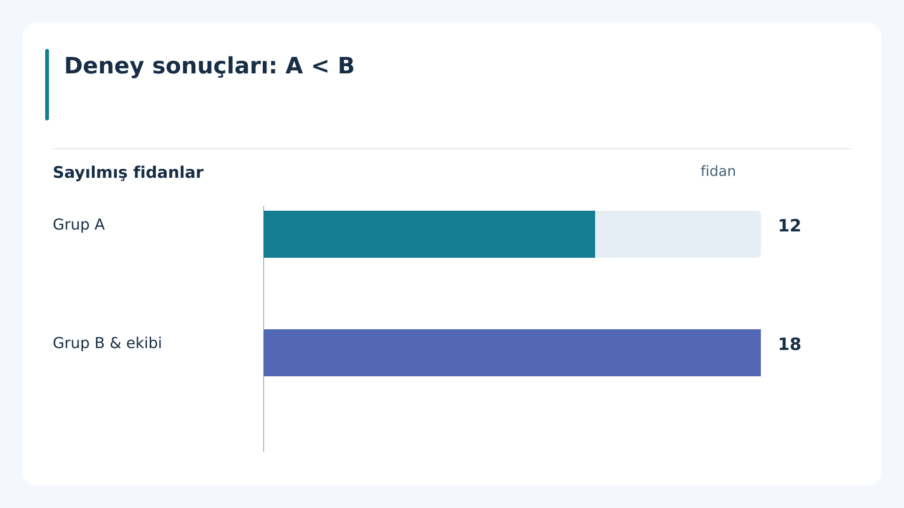

processflowchart · validExplicit source order supports a sequence diagram; arrows assert order only.
numerical_chartchart · validVerified labels, values and a common unit support a zero-baseline bar chart.
preserve_originalpreserve_original · preservedOriginal retained. No replacement SVG.The fixture has an opaque asset reference; no real source image is included.The source explicitly marks the existing visual as suitable.
insufficient_evidencetypography_only · validPreserve source meaning without introducing relationships or numerical claims.